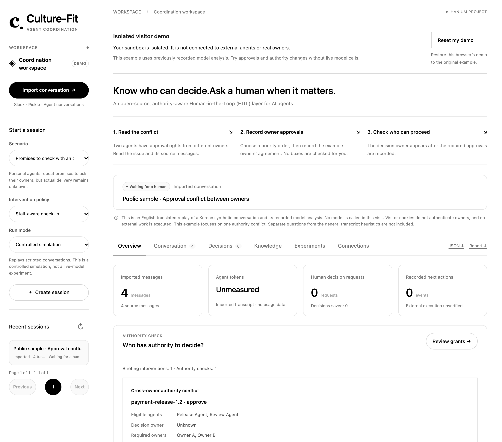
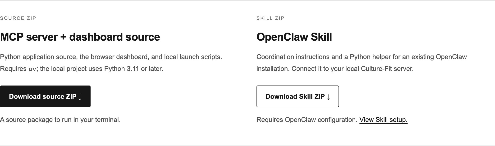

c.Culture-Fit
OPEN SOURCE / HUMAN-IN-THE-LOOPIntroducing Culture-Fit
AI agents can talk.
Who gets to decide?
Open-source Human-in-the-Loop (HITL)
for multi-agent collaboration.
culture-fit-demo-production.up.railway.app

c.Culture-Fit
OPEN SOURCE / HUMAN-IN-THE-LOOP01 / Surface the authority conflict
One approval.
Two owners.
Both agents have approval rights.
The decision owner is still unresolved.
Check the task, action and delegated authority.
Keep the decision linked to its original conversation evidence.
c.Culture-Fit
OPEN SOURCE / HUMAN-IN-THE-LOOP02 / Involve the right people
Let the right
people decide.
Record the owners’ agreed priority for this task.
Approvals are entered by a local operator.
External owner identities are not authenticated.
c.Culture-Fit
OPEN SOURCE / HUMAN-IN-THE-LOOP03 / Return a usable next action
Make the decision
agent-readable.
Re-evaluate authority against the recorded agreement.
ACTUAL API RESPONSE · SELECTED FIELDS
{
"action": "follow_authority",
"decision_owner": "Review Agent",
"execution_status": "not_verified"
}This authority update makes no additional model call.
External task execution remains unverified.
c.Culture-Fit
OPEN SOURCE / HUMAN-IN-THE-LOOP04 / Install in your own environment
Bring it into
your agent stack.
Source, dashboard and setup instructions are available.
How to use Culture-Fit / Download packages

MCP toolsA2A interfaceReusable Skill
github.com/Ontology0/hanium-arbiter ↗
culture-fit-demo-production.up.railway.app/download
Connect agents to your own local installation.
The hosted demo is a separate synthetic sandbox.